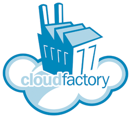

Doctoral Consortium — HCOMP 2014
Conference on Human Computation & Crowdsourcing
November 2, 2014 ‐ Pittsburgh, USA
 Courtesy of Derek J. Cashman
Courtesy of Derek J. Cashman
HCOMP 2014 Doctoral Consortium
List of presentations
Sponsors

|
 |
Call For Participation
Overview:
The HCOMP 2014 Doctoral Consortium will provide doctoral students with a unique opportunity to meet each other and experienced researchers in the field. The objectives of the Doctoral Consortium are:
- To provide a forum where doctoral students can present and discuss their research with experienced researchers: the members of the Doctoral Consortium Program Committee.
- To provide students with an opportunity to establish a supportive community, including other doctoral students at a similar stage of their dissertation research.
Mentoring
Students will be mentored by a group of faculty who are leaders in the diverse specialties that make up the HCOMP field.
Doctoral Consortium Co-Chairs
- Matthew Lease (University of Texas at Austin)
- Loren Terveen (University of Minnesota)
Program Committee
- Laura Dabbish (Carnegie Mellon University)
- Elizabeth Gerber (Northwestern University)
- Eric Horvitz (Microsoft Research)
- Henry Kautz (University of Rochester)
- Siddarth Suri (Microsoft Research)
- Haoqi Zhang (Northwestern University)
Financial Support
Thanks to generous funding from the the National Science Foundation (NSF), we will be able to support most expenses associated with attendance (e.g., airfare, one night of hotel expenses, conference registration, and meals on the day of the Consortium) for all accepted students.
Date/Location
The Consortium will take place on November 2, 2014 in Pittsburgh, PA, immediately before the main HCOMP 2014 conference. Planned Activities: The day will feature student presentations with plenary discussions, individual meetings with experienced researchers, and highly interactive networking sessions over meals and breaks.
Eligibility
Prospective attendees should have written, or be close to completing, a thesis proposal (or equivalent). We will give preference to students who are far enough from completing their thesis that the feedback they receive at the event can impact their work. Before submitting, students should discuss this criterion with their advisor or supervisor, who must write a short letter of support as part of the application. Those accepted are required to attend the event in person.
Selection Criteria
Selection will be based upon the expected potential of both the student and their proposed work, as well as the expected benefit to the student from participation. Priority will be given to students whose research goes beyond locally available expertise at their home institutions.
Required Materials:
Applicants must submit: 1) a solely-authored written paper, 2) a paragraph motivation for attending; and 3) supporting advisor paragraph.
- Written paper. While final versions of accepted papers will be posted on the Doctoral Consortium website and publicized in the HCOMP community, proceedings of the Doctoral Consortium will NOT be archived. As such, students may freely submit their research contributions for official publication in other venues.
Sections of the submitted paper should include:- Motivation for the proposed research
- Background and related work (including key references)
- Description of proposed research, including key research questions and planned methodology to be used for investigating these research questions
- Proposed experiments if appropriate; Any preliminary evaluation and findings are welcomed, but this is not required.
- Specific research issues and/or challenges the student would like to discuss
- Motivation Paragraph (Paper appendix). The paper should also include a one page appendix (placed after the references) containing a single paragraph written by the student explaining why he/she wants to participate in the Doctoral Consortium at this point in their doctoral studies, and how they hope it will contribute to the development of their work and potential future career.
- Advisor Paragraph (email). No later than the submission deadline, the student’s advisor / supervisor should email the Doctoral Consortium Co-Chairs with a paragraph which: 1) supports the student’s application; 2) states that the student has written, or is close to completing, a thesis proposal (or equivalent); 3) states when they expect the student would defend their dissertation if they progress at a typical rate; and 4) describes how they expect the student would benefit by attending the Doctoral Consortium, particularly mentioning any expertise areas essential to the student's studies that are not available locally at the student's home institution.
- Format Requirements. Submitted papers must be written in English, formatted according to AAAI Format guidelines, and submitted as a single PDF file (embedding all required fonts). The paper should be no more than 5 pages in length including all figures and references, but not including the one page appendix. The first page must contain the title of the paper, full author name, affiliation and contact details, an abstract of up to 250 words, and up to 3 keywords describing the topic areas.
Submission Guidelines
Papers must be submitted via the CMT online submission system. It is the responsibility of the student to ensure that their submissions use no unusual format features and are printable on a standard printer. Submissions will be reviewed by the members of the Doctoral Consortium’s Program Committee.
Schedule
- 4 August 2014: Submissions due
- 29 August 2014: Acceptance notifications
- 2 November 2014: Doctoral Consortium